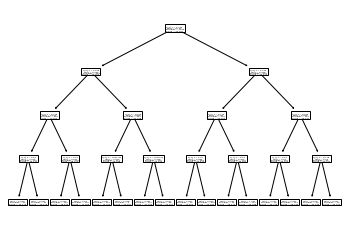
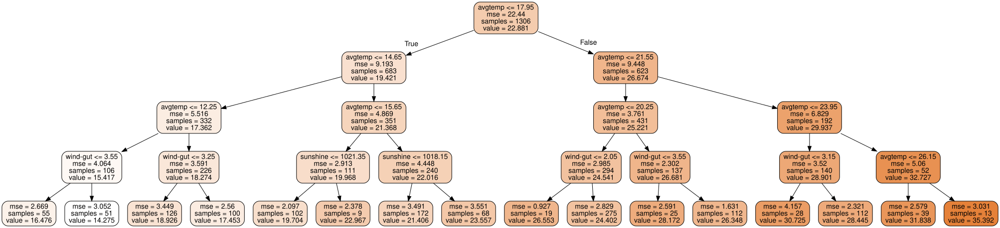
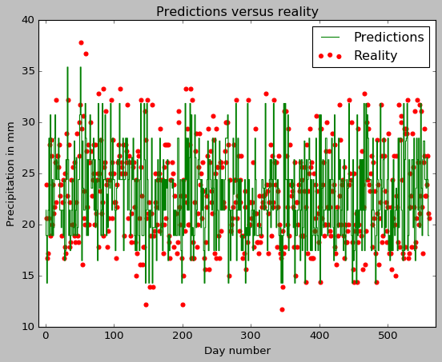

Decision tree regressor
Will it rain today ?
Let’s continue to work with our weather dataset from last time. Our goal is to analyze the weather data from the past and develop a model to predict the amount of rainfall, given the other weather parameters.
We are going to do this by building a decision tree regressor. This model sort of works like playing Twenty Questions. You build a tree of relevant queries about the accessible parameters of the dataset^[[Is the average temperature > 30 C”. If yes, ask query1, if not ask query2…] so that, going down a path leads you to a reasonable prediction of the target.
In this post, we’ll concentrate on learning how to use scikit-learn’s implementation of the decision tree regressor and leave the actual theoretical analysis of how the algorithm works to a later date.
Imports
We’ll be using the pandas library as well as scikit-learn. So you’ll have to preface your code with the following import statements.
import pandas as pd
import matplotlib.pyplot as plt
plt.style.use('classic')
import numpy as np
from sklearn.model_selection import train_test_split
from sklearn.tree import DecisionTreeRegressor
from sklearn import tree
from sklearn.tree import export_graphviz
import graphviz
from sklearn.metrics import mean_squared_errorThe dataset from before
Recall the daily_weather_df data frame we had created last time by wrangling some data from https://dev.meteostat.net/.
import pandas as pd
# Make a list of column names
# Since each row in the csv file ends with a comma, pandas thinks there is a col entry there.
# So we create a column called dummy
col_names = ['date','avgtemp', 'mintemp', 'pp', 'snow', 'wind-dir', 'wind-speed',
'wind-gut', 'air-pressure', 'sunshine', 'dummy']
# Reads the comma separated csv into a pandas dataframe
daily_weather_df =pd.read_csv('KCQT0.csv', sep=',',names=col_names, header = None)
# Delete dummy col
del daily_weather_df['dummy']
print("Weather dataframe looks like:")
print(daily_weather_df.head())Output:
Weather dataframe looks like:
date avgtemp mintemp pp snow wind-dir wind-speed wind-gut \
0 2000-01-01 10.4 7.8 13.9 NaN NaN NaN 2.0
1 2000-01-02 12.0 7.2 15.6 NaN NaN NaN 8.1
2 2000-01-03 11.4 5.6 18.9 NaN NaN NaN 1.3
3 2000-01-04 12.6 7.2 20.0 NaN NaN NaN 3.0
4 2000-01-05 13.3 5.6 21.7 NaN NaN NaN 1.9
air-pressure sunshine
0 NaN 1018.9
1 NaN 1021.0
2 NaN 1026.5
3 NaN 1024.9
4 NaN 1018.0 The API docs again tell you that the columns correspond to
date, average air temperature in celsius, minimum air temperature in celsius, daily precipitation total in mm, snow depth in mm, average wind direction in degrees, average wind speed in km/hr, peak wind gut in km/hr, average sea-level air pressure in hPa, the daily sunshine total in minutes.
Pruning the dataset
As you might remember, some of the entries of this data frame were NaNs. Let’s get rid of some of the irrelevant columns and also any row that might contain a NaN entry.
# Delete irrelevant cols
del daily_weather_df['air-pressure']
del daily_weather_df['wind-speed']
del daily_weather_df['snow']
del daily_weather_df['wind-dir']
del daily_weather_df['date']
del daily_weather_df['mintemp']
# Delete rows with NaN entries
daily_weather_df.dropna(inplace=True)
print(daily_weather_df.shape)
print(daily_weather_df.columns)Output:
(1866, 4)
Index(['avgtemp', 'pp', 'windgut', 'sunshine'], dtype='object')That is, we have 1866 datapoints and each datapoint has four attributes, namely, avgtemp, pp, windgut, sunshine. These stand for daily average temperature in celsius, precipitation in mm, peak wind gut in km/hr, the daily sunshine total in minutes
Features and targets
Let’s first demark the data into features and target variables. Features represent the weather attributes we have access to. Target represents the attribute we are trying to predict.
# Drop precipitation column to get weather_features
weather_features = daily_weather_df.drop(['pp'], axis=1)
# Isolate precipitation targets
precipitation_targets = daily_weather_df['pp']
print(weather_features.head())
print(precipitation_targets.head())| avgtemp | wind-gut | sunshine | |
|---|---|---|---|
| 0 | 10.4 | 2.0 | 1018.9 |
| 1 | 12.0 | 8.1 | 1021.0 |
| 2 | 11.4 | 1.3 | 1026.5 |
| 3 | 12.6 | 3.0 | 1024.9 |
| 4 | 13.3 | 1.9 | 1018.0 |
Target:
0 13.9
1 15.6
2 18.9
3 20.0
4 21.7
Name: pp, dtype: float64Training and test data split
Now we will split up our dataset into training data and test data. As you might have guessed, we’ll use the training data to train our model (i.e. build it up). And we’ll evaluate the model’s performance on the test-data. We go with a 70-30 split, i.e we’ll use 70% of the dataset for training and keep the rest for evaluation.
# Declare random state to be an int to get reproducible output, shuffle is True by default
X_train, X_test, y_train, y_test = train_test_split(weather_features,
precipitation_targets,
test_size=0.30,
random_state=10,
shuffle=True)
print(f"Training data : {X_train.shape}, {y_train.shape}")
print(f"Test data : {X_test.shape}, {y_test.shape}")Output:
Training data : (1306, 3), (1306,)
Test data : (560, 3), (560,)Building the Regression Tree
Using scikit-learn, building a decision tree regressor translates to two-lines of code!
tree_reg = DecisionTreeRegressor(max_depth=4)
tree_reg.fit(X_train, y_train)Output:
DecisionTreeRegressor(ccp_alpha=0.0, criterion='mse', max_depth=4,
max_features=None, max_leaf_nodes=None,
min_impurity_decrease=0.0, min_impurity_split=None,
min_samples_leaf=1, min_samples_split=2,
min_weight_fraction_leaf=0.0, presort='deprecated',
random_state=None, splitter='best')Visualization
OK, so we have our tree! But what does it look like ?
tree.plot_tree(tree_reg) 
Um, alright. This picture tells us something despite not being very readable. For instance, it tells us that our binary tree has max-depth 4 (which if you look in the code, was a hyper parameter we had fixed). That is, with our model and maximum four questions, we should arrive at a prediction for any test-input.
However, let’s aim for some better visuals so as to actually see what these questions are!
Prettier visuals
dot_data = export_graphviz(
tree_reg,
out_file=None,
feature_names=weather_features.columns,
rounded=True,
filled=True
)
prettier_graph = graphviz.Source(dot_data)
prettier_graph
If you zoom in, the regression tree should be self-explanatory. By the way, a few words about the labels in the graph.
- Samples refer to the number of data points which have satisfied all the queries up to that point. So for instance, samples = 1306 = size of the entire training data for the very first question (because there have been no previous queries). However samples = 683 when you look at the second row, left node. That is only 683 data points satisfied the previous query “Is avg-temp <= 17.95” etc.
- Value refers to the prediction of the target, i.e. the predicted amount of precipitation in mm, up to that point.
- MSE refers to the mean-square error.
Predictions
So, how do we use our tree for predictions ? Let’s first predict the precipitation for a single test-input
# Picks the datapoint from X_test, y_test with index = 646 (some random index!)
x_sample_point = X_test.loc[646]
y_sample_point = y_test.loc[646]
print(x_sample_point)
print(f"True precipitation is : {y_sample_point}")
print(f"Prediction precipitation is {tree_reg.predict([x_sample_point])}")Output:
avgtemp 17.3
wind-gut 2.9
sunshine 1015.1
Name: 646, dtype: float64
True precipitation is : 20.6
Prediction precipitation is [21.40639535]Let’s now turn to predictions in bulk.
## Test set predictions
y_pred = tree_reg.predict(X_test)
# Print type and shape of y_pred
print(type(y_pred), y_pred.shape)
#Print the first ten predictions
print(y_pred[:10])Output:
(numpy.ndarray, (560,))
array([21.40639535, 18.92619048, 14.2745098 , 18.92619048, 21.40639535,
28.44464286, 18.92619048, 30.725 , 28.44464286, 18.92619048])Evaluation of test-predictions
Note that y_pred is the numpy array with our predictions while y_test is a pandas series object with the actual precipitations for the test-data. We compute the root-mean square error (i.e. sqrt(sum of the squares of the differences between actual precipitations and predicted values))
y_test_numpy = y_test.to_numpy()
# Root mean squared error between predictions and test values
print(f"Root mean squared error : {mean_squared_error(y_test_numpy,y_pred,squared=False)}")Output:
Root mean squared error : 1.7764921365123483Let’s go further and draw a simple plot of reality versus the predictions.
# Plot of y_test and y_pred
evaluation_of_predictions = plt.figure()
plt.scatter(range(1,561),y_test, color="red", label="Reality");
plt.step(range(1,561),y_pred, color="green",label="Predictions");
plt.xlim(-10,570)
plt.title("Predictions versus reality")
plt.xlabel("Day number")
plt.ylabel("Precipitation in mm");
plt.legend();
Citation
@online{bhaskhar2020,
author = {Bhaskhar, Nivedita},
title = {Decision Tree Regressor},
date = {2020-09-01},
url = {https://nivbhaskhar.github.io/blog/posts/2020-09-01-decision-tree-regressor.html},
langid = {en}
}